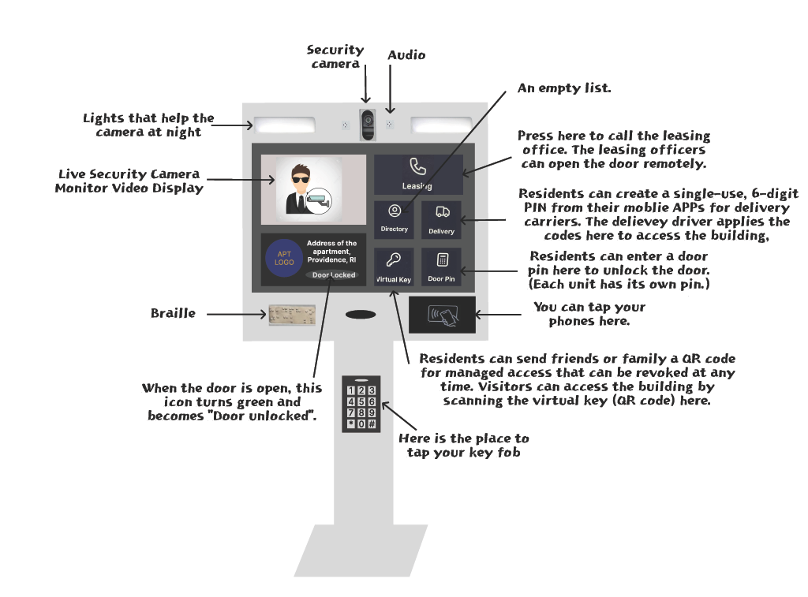
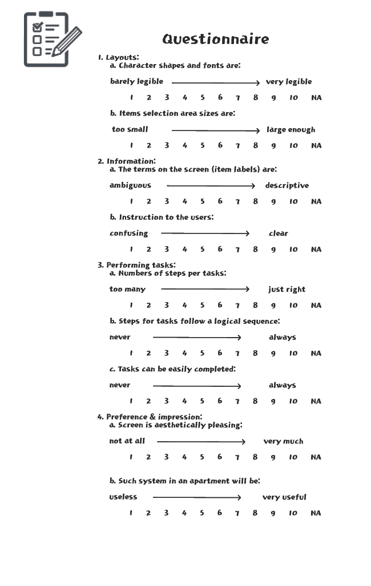
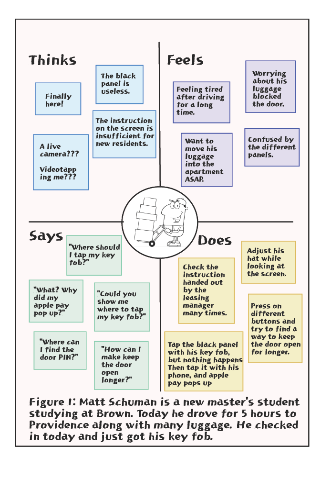
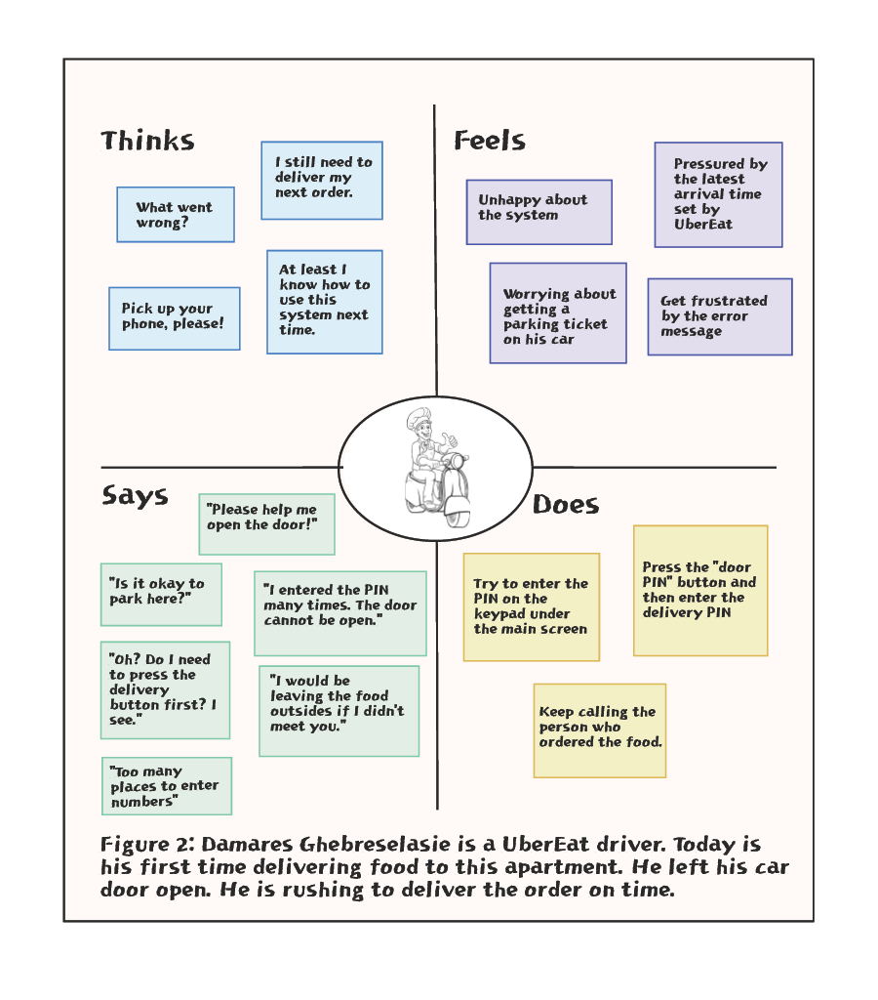
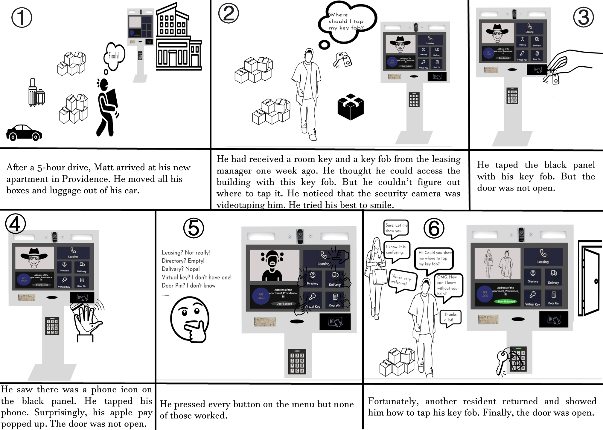

More and more apartments started to update their property access system at the main gate and advertised themselves as tech-forward buildings. I currently live in such an apartment. Personally, I think some features are useless and misleading. I would like to know what other users think about it.
Let me first introduce our system. The figure below is a scratch of the system's interface. The system can communicate with an APP. Each resident will be able to set up their accounts after moving in.
I prepared the following questionnaire to ask users questions from four aspects. I would like to know their opinions on the system layouts and usability.
My first interviewee, Matt Schuman, is a new tenant who just moved from another state to Providence for school. He signed a lease with this apartment remotely. So, it was his first time using the interface.
My second interviewee, Amy Liu, is a mother and dog owner who has lived here for more than one year. At the time of the interview, she was pushing a stroller while walking a dog.
My third interviewee, Damares Ghebreselasie, is a UberEat driver. He tried to enter the building with a delivery pass, but things didn't go as expected.
• First-time users believe that the terms on the screen are ambiguous and lack instruction to users. However, a more experienced user thinks the information is just right.
• The interface doesn't meet the expectations of all my interviewees. First-time users have trouble performing their tasks and can't figure it out with others' help. Though the more experienced user had no problem using it, the user believes the interface could be further improved by introducing a place to read the fingerprint. So, she can better handle her dog and kid while opening the door.
• Surprisingly, all users believe that a system is beneficial. One user points out that if he couldn't figure out how to use it, the thief couldn't either.
Here I made personas for two of my interviewees. Personas is a four-quadrant empathy map describing what users think, feel, say, and do for one archetypal character.
According to the leasing manager, half of the residents in this apartment are college students, especially graduated students. I believe Matt is a good representation of this group. When I arrived for the first time, I encountered the same problem as he did use the interface. The problem is I cannot figure out where to tap my key fob. Tapping the key fob to open the door doesn't require using the screen. Therefore, first-time users cannot find any instructions on the screen. Plus, no symbols indicate where we should tap the key fob. Let us take a look at Matt's empathy map below.
Second personas is on Damares. Delivery drivers are also a large group of users. I believe people from Amazon come here at least three times daily; they are very familiar with the system. But my interviewee is a new UberEat driver and hasn't been to this building before. At the interview, he wanted to enter his delivery pass but couldn't figure out which keypad to use. The interface is misleading because there will be a keypad on the screen after you press delivery. But there is also a physical keypad below the screen. First-time users can get very confused. In my impression, many food and packages have been left outsides the building because the drivers can't figure out how to enter the delivery PIN.
To better illustrate what happens when a new resident arrives at the apartment with lots of moving boxes but cannot open the main door, I created the following storyboarding on Matt.
